Sspace
Created by Christina Pollais '16, Sasha Levy '15, and Steffi Lee '15
Computer Prototype
We decided to implement the first design, which can be seen in the screen captures below.
We implemented the eight golden rules:
- Consistency: The whole application has the three same basic colors: white, gray, and light blue and the same format on each page (header, navigation, etc).
- Universal Usability: The application caters to all users by having a simple interface and intuitive icons throughout.
- Informative Feedback + Yield Closure: All actions, such as posting a comment or deleting a past comment, have feedback and diologs that show their completion.
- Prevent Errors: By offering informative feedback to actions such as posting a comment, the application prevents easily made errors.
- Support internal locus of control: The application is consistent and there are not surprises.
- Reduce short-term memory load: The uesr only needs to sign in once, thus reducing their memory load.
We implemented the color principles we learned in class:
We implemented the icon principles we learned in class:
Features
- High fidelity in look: All of the application's main pages have been created.
- Medium fidelity in breadth: All of the application's main features have been created.
- Mixed fidelity in depth: All of the application's features can be implemented, except for "upvoting" a comment, which has been put in place but when pressed doesn't respond accordingly. This will be fixed shortly in the next phase as it was not required due to the "mixed fidelity".
Tasks that are available: posting a comment, searching for a location, clicking on a location from the map, and deleting a comment.
The tasks of searching for a location, clicking on a location from the map, and viewing a location's profile are fully implemented (Tasks 1, 2, and 5 from phase 3) while the other two are missing the back-end.
Screen Captures
Home-screen:
This is the screen that users are greeted with when they have not logged in yet. Once they log in, they will never see this page again.
Map:
This is the "map" screen. Users can see their current location (the star) and the locations around them. By pressing on one of the locations once, a pop up will appear that ill show more details about it (photo #3) and by pressing on one of the locations twice, the user will get redirected to the location's profile (photo #4).
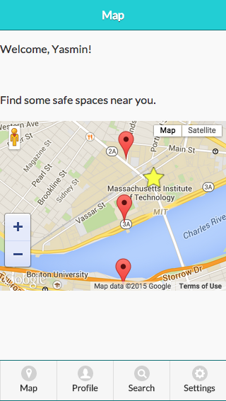
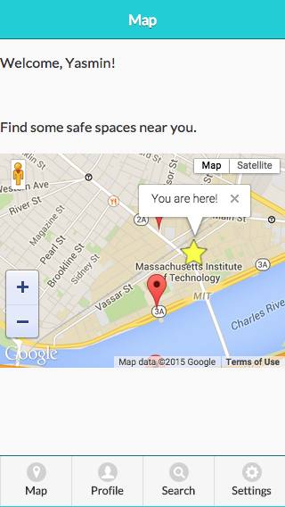
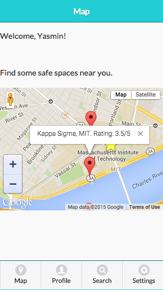
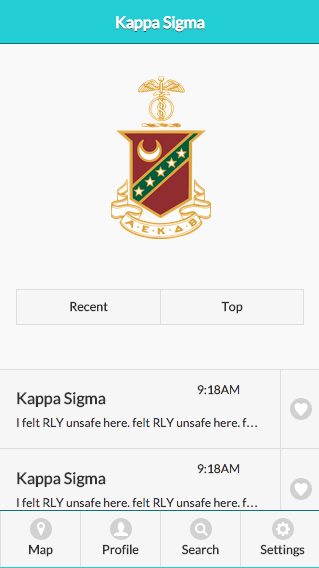
Profile:
This is a user's profile. They can access it through the navigation bar on the bottom of each page. It has your comments (ordered either by recent or top depending on which you choose) and a user can delete them by pressing on the "x" icon on the side of each comment. When a user takes that course of action, they are greeted by a pop up that will ask them if they are sure in order to reduce mistakes (photo #3).
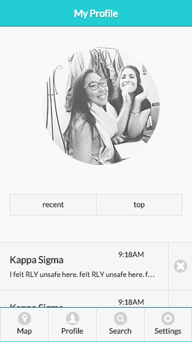
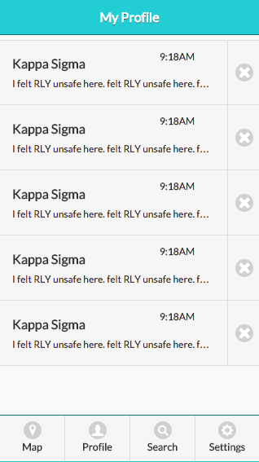
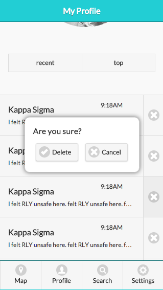
Search:
This is where a user can search for a location. They can also access this page through the navigation bar on the bottom of each page. They are able to see all the location pages available on the bottom (which are also buttons so if the user clicks one, they will be redirected to the particular location's page). Once a user starts typing in the search bar, only the correct location will appear below (photo #2).
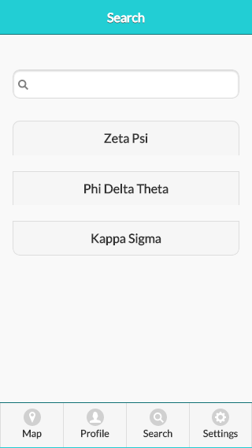
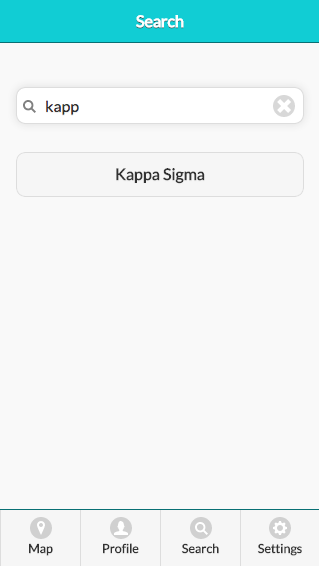
Location page: Kappa Sigma
This is an example of what all location pages will look like. It is very similar to a user's profile page as to increase consistency and internal locus of control. Here, a user can look at the reviews a location has (either by recent or top) and can either like comments by clicking on the hearts next to each comment (not implemented yet at this phase) or post a comment (redirected to the pages in the next section).
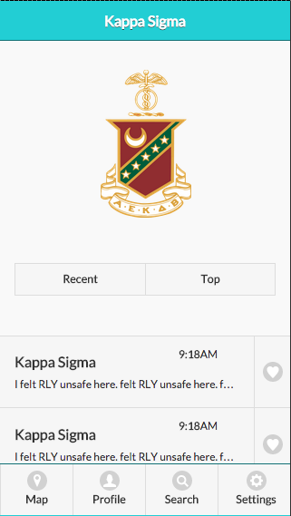
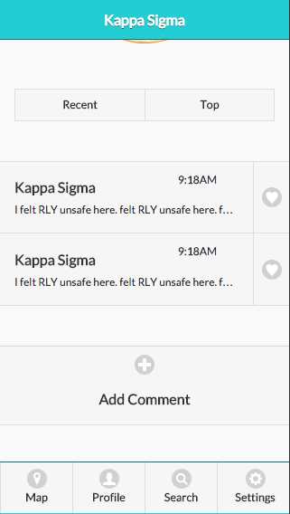
Comment:
This is where a user can write and post a comment. They can access this page only by first accessing a particular location and then pressing on the "Add a Comment" button (seen above, photo #2). They can write a comment and then press "Post". Then, they are prompted by a pop-up that asks them if they are sure in order to limit mistakes. After they re-affirm that they want to submit their comment, they are redirected to a page that confirms that their comments has been posted and a button that allows them to go and see it on the location's page.
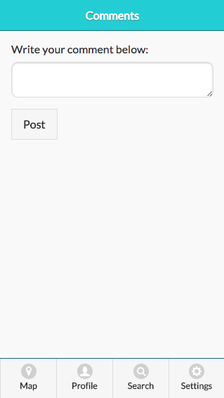
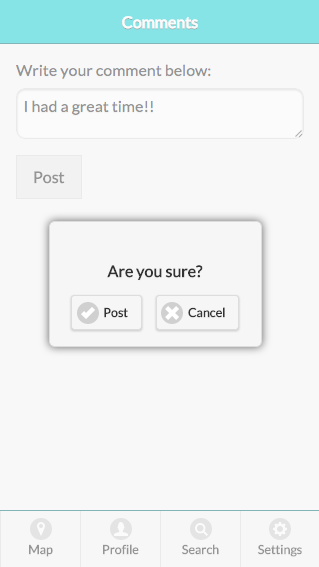
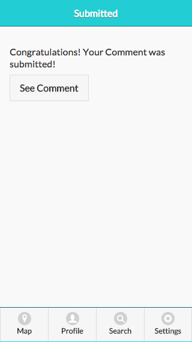